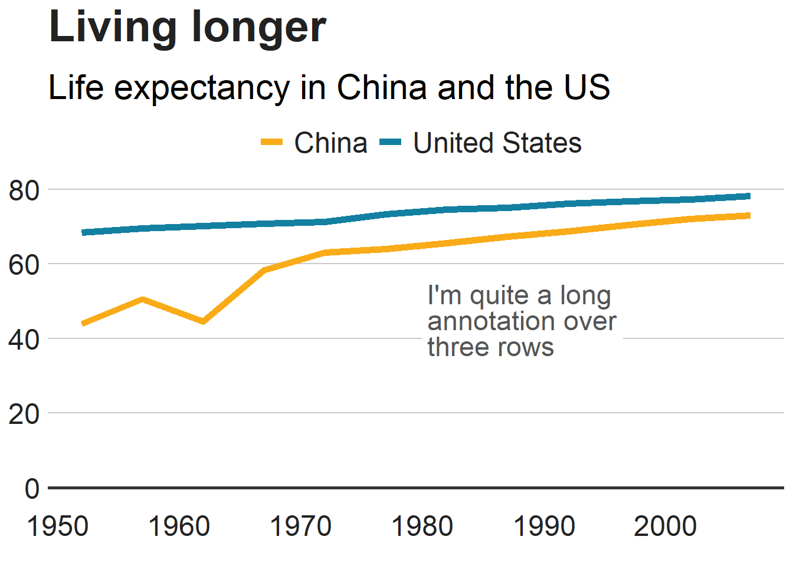
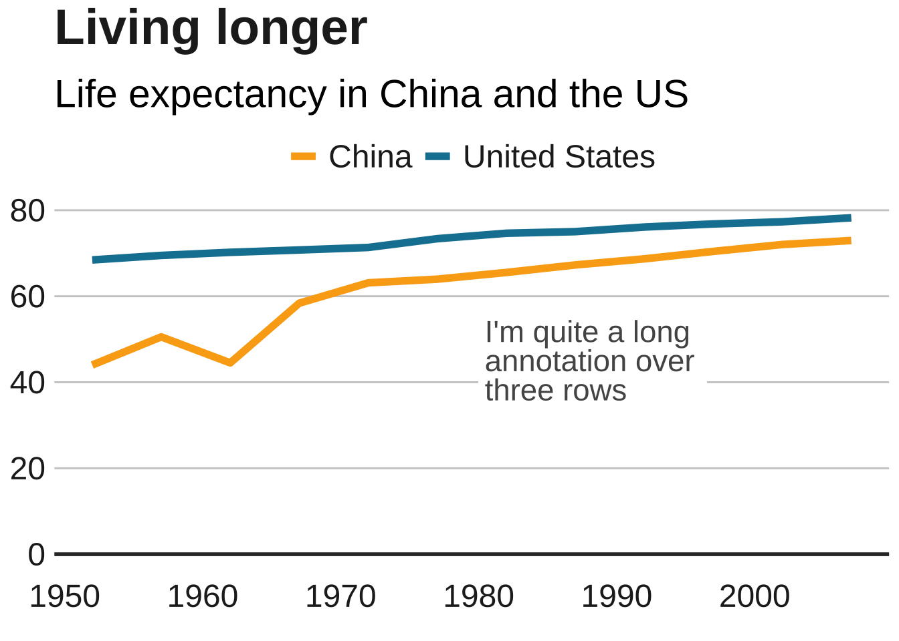
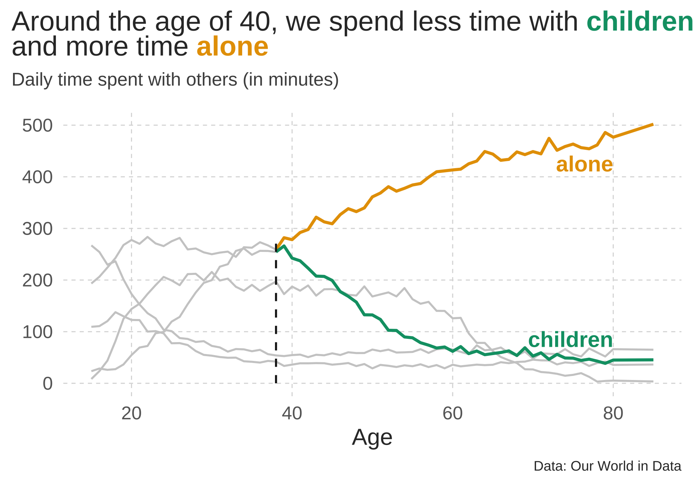

library(tidyverse)# For ggplot, dplyr, and friendslibrary(gapminder)# For gapminder datalibrary(scales)# For nice axis labelsgapminder_filtered<-gapminder%>%filter(year>2000)base_plot<-ggplot(data =gapminder_filtered, mapping =aes(x =gdpPercap, y =lifeExp, color =continent, size =pop))+geom_point()+# Use dollars, and get rid of the cents part (i.e. $300 instead of $300.00)scale_x_log10(labels =dollar_format(accuracy =1))+# Format with commasscale_size_continuous(labels =comma)+# Use viridisscale_color_viridis_d(option ="plasma", end =0.9)+labs(x ="GDP per capita", y ="Life expectancy", color ="Continent", size ="Population", title ="Here's a cool title", subtitle ="And here's a neat subtitle", caption ="Source: The Gapminder Project")+facet_wrap(vars(year))
Create and save theme (my_pretty_theme)
Code
my_pretty_theme<-theme_minimal(base_family ="Roboto Condensed", base_size =12)+theme(panel.grid.minor =element_blank(),# Bold, bigger title plot.title =element_text(face ="bold", size =rel(1.7)),# Plain, slightly bigger subtitle that is grey plot.subtitle =element_text(face ="plain", size =rel(1.3), color ="grey70"),# Italic, smaller, grey caption that is left-aligned plot.caption =element_text(face ="italic", size =rel(0.7), color ="grey70", hjust =0),# Bold legend titles legend.title =element_text(face ="bold"),# Bold, slightly larger facet titles that are left-aligned for the sake of repetition strip.text =element_text(face ="bold", size =rel(1.1), hjust =0),# Bold axis titles axis.title =element_text(face ="bold"),# Add some space above the x-axis title and make it left-aligned axis.title.x =element_text(margin =margin(t =10), hjust =0),# Add some space to the right of the y-axis title and make it top-aligned axis.title.y =element_text(margin =margin(r =10), hjust =1),# Add a light grey background to the facet titles, with no borders strip.background =element_rect(fill ="grey90", color =NA),# Add a thin grey border around all the plots to tie in the facet titles panel.border =element_rect(color ="grey90", fill =NA))
Code
base_plot+my_pretty_theme
Lets make this plot even better :D
Code
library(tidyverse)library(gapminder)library(scales)library(ggtext)library(thematic)gapminder_filtered<-gapminder%>%filter(year>2000)colors<-thematic::okabe_ito(5)title_text<-glue::glue(' Life Expectancy per GDP for <span style = "color:{colors[1]}">**Africa**</span>, <span style = "color:{colors[2]}">**America**</span>, <span style = "color:{colors[3]}">**Asia**</span>, <br> <span style = "color:{colors[4]}">**Europa**</span> and <span style = "color:{colors[5]}">**Oceania**</span>')plot_nice<-ggplot(data =gapminder_filtered, mapping =aes(x =gdpPercap, y =lifeExp, color =continent, size =pop))+geom_point()+# Use dollars, and get rid of the cents part (i.e. $300 instead of $300.00)#log10 scale = abstände nicht gleich(nicht-linear): x-1*x = x+1scale_x_log10(labels =dollar_format(accuracy =1))+# Format with commas (anstatt wissenschaftliche Notation für Population)scale_size_continuous(labels =comma)+# Use viridis colorscale_color_viridis_d(option ="plasma", end =0.9)+labs(x ="GDP per capita", y ="Life expectancy", color ="Continent", size ="Population", title =title_text, subtitle ="Visible Correlation between GDP (per capita) and Life expecanty", caption ="Source: The Gapminder Project")+facet_wrap(vars(year))+theme_minimal(base_family ='Source Sans Pro', base_size =12)+#guide = none, legend wird ausgelassenscale_color_manual(values =thematic::okabe_ito(5), guide ="none")+#grauere Hintergrund verschwindet+theme(panel.grid.minor =element_blank(),# Plain, slightly bigger subtitle that is grey plot.subtitle =element_text(face ="plain", size =rel(1.3), color ="grey70"),# Italic, smaller, grey caption that is left-aligned plot.caption =element_text(face ="italic", size =rel(0.7), color ="grey70", hjust =0),#Bold legend titles legend.title =element_text(face ="bold"),# Bold, slightly larger facet titles that are left-aligned for the sake of repetition strip.text =element_text(face ="bold", size =rel(1.1), hjust =0, color ="white"), plot.title =ggtext::element_markdown( color ='grey20', family ='Merriweather', size =rel(1.7),face ="bold"), plot.title.position ="plot",# Bold axis titles axis.title =element_text(face ="bold"),# Add some space above the x-axis title and make it left-aligned axis.title.x =element_text(margin =margin(t =10), hjust =0),# Add some space to the right of the y-axis title and make it top-aligned axis.title.y =element_text(margin =margin(r =10), hjust =1, margin(0,4,0,0)),# Add a light grey background to the facet titles, with no borders strip.background =element_rect(fill ="grey20", color =NA),# Add a thin grey border around all the plots to tie in the facet titles panel.border =element_rect(color ="grey20", fill =NA), legend.position ="top", legend.justification =1)plot_nice
We can add some annotations
Annotionations can be great to highlight information that gets lost otherwise. For example we see that South Africa increases its GDP per capita from 2002 to 2007 but life expectancy decreases by 4 years.
Code
#find african country with dip in lifeexp: South Africa(2002: x = 7711 ,y= 53.4; 2007: x = 9270, y = 49.3)gapminder_filtered|>filter(continent=="Africa"&between(gdpPercap,3000,10000)&between(lifeExp,48,55))|>arrange(desc(pop))
# A tibble: 6 × 6
country continent year lifeExp pop gdpPercap
<fct> <fct> <int> <dbl> <int> <dbl>
1 South Africa Africa 2002 53.4 44433622 7711.
2 South Africa Africa 2007 49.3 43997828 9270.
3 Congo, Rep. Africa 2002 53.0 3328795 3484.
4 Namibia Africa 2007 52.9 2055080 4811.
5 Namibia Africa 2002 51.5 1972153 4072.
6 Equatorial Guinea Africa 2002 49.3 495627 7703.
Code
# creat df for different arrow coordinationsdf_2002<-gapminder_filtered%>%filter(year==2002)%>%mutate( start_x =12000, end_x =9000, start_y =55, end_y =53.4)# creat df for different arrow coordinationsdf_2007<-gapminder_filtered%>%filter(year==2007)%>%mutate( start_x =12000, end_x =10000, start_y =55, end_y =49.3)plot_nice_anno<-plot_nice+geom_label(aes(x =12000, y =55, label ="South Africa"), hjust =0, vjust =0.5, lineheight =0.8, colour =colors[1], fill ="white", label.size =NA, size =5)+geom_curve(data =df_2002, aes(x =start_x, y =start_y, xend =end_x, yend =end_y), colour ="grey20", size=0.8, curvature =-0.2, arrow =arrow(length =unit(0.03, "npc")))+geom_curve(data =df_2007, aes(x =start_x, y =start_y, xend =end_x, yend =end_y), colour ="grey20", size=0.8, curvature =-0.2, arrow =arrow(length =unit(0.03, "npc")))plot_nice_anno
#This line of code installs the pacman page if you do not have it installed - if you do, it simply loads the packageif(!require(pacman))install.packages("pacman")pacman::p_load('dplyr', 'tidyr', 'gapminder','ggplot2', 'ggalt','forcats', 'R.utils', 'png', 'grid', 'ggpubr', 'scales','bbplot')#install.packages('devtools')#devtools::install_github('bbc/bbplot')library(bbplot)
Code
#Prepare datamultiple_line_df<-gapminder%>%filter(country=="China"|country=="United States")#Make plotmultiple_line<-ggplot(multiple_line_df, aes(x =year, y =lifeExp, colour =country))+geom_line(size =2)+geom_hline(yintercept =0, size =1, colour="#333333")+scale_colour_manual(values =c("#FAAB18", "#1380A1"))+bbc_style()+labs(title="Living longer", subtitle ="Life expectancy in China and the US")multiple_line

Add annotation
Code
multiple_line<-multiple_line+geom_label(aes(x =1980, y =45, label ="I'm quite a long\nannotation over\nthree rows"), hjust =0, vjust =0.5, lineheight =0.8, colour ="#555555", fill ="white", label.size =NA, family="Helvetica", size =6)multiple_line

Add legend to lines
Code
multiple_line<-multiple_line+theme(legend.position ="none")+xlim(c(1950, 2011))+geom_label(aes(x =2007, y =79, label ="US"), hjust =0, vjust =0.5, colour ="#1380A1", fill ="white", label.size =NA, family="Helvetica", size =6)+geom_label(aes(x =2007, y =72, label ="China"), hjust =0, vjust =0.5, colour ="#FAAB18", fill ="white", label.size =NA, family="Helvetica", size =6)multiple_line
Text that appears when folded
Contents that appear when unfolded. Can contain many lines, as well as code chunks.
Code
library(tidyverse)library(gghighlight)library(thematic)library(ggtext)df<-read.csv("time.csv")df_c<-df|>select(Year,alone =contains("alone"),coworkers =contains("coworker"), parents =contains("parents"), children =contains("children"), friends =contains("friends"))%>%pivot_longer( cols =alone:friends, names_to ='person', values_to ='minutes')colors<-thematic::okabe_ito(2)title_text<-glue::glue('Around the age of 40, we spend less time with <span style = "color:{colors[2]}">**children**</span><br>and more time <span style = "color:{colors[1]}">**alone**</span>')# plotdf_c|>ggplot(aes(x =Year, y =minutes, color =person))+geom_line(linewidth =1.5)+labs(title ='Time with others as we get older')+theme_minimal( base_size =24, base_family ='Source Sans Pro')+labs( x ='Age', y =element_blank(), title =title_text, subtitle ='Daily time spent with others (in minutes)', caption ='Data: Our World in Data')+gghighlight(person%in%c('alone', 'children'), Year>=38, use_direct_label =F, use_group_by =FALSE, unhighlighted_params =list(color ='grey80', linewidth =1))+annotate('text', x =80, y =c(425, 85), size =8, label =c('alone', 'children'), family ='Source Sans Pro', fontface ='bold', hjust =1, color =thematic::okabe_ito(2))+annotate('segment', x =38, xend =38, y =0, yend =275, linetype =2, linewidth =1, color ='grey10')+scale_color_manual(values =thematic::okabe_ito(2))+theme( legend.position ='none', panel.grid.minor =element_blank(), panel.grid.major =element_line(linewidth =0.5, linetype =2, color ='grey85'), plot.title.position ='plot', text =element_text(color ='grey20'), axis.text =element_text(color ='grey40'), plot.title =ggtext::element_markdown( color ='grey20', family ='Merriweather'), plot.subtitle =element_text( color ='grey30', size =rel(0.8), margin =margin(b =8, unit ='mm')), plot.caption =element_text(size =rel(0.6), color ='grey20'))

Example 4
lets make a global theme than can be applied to all plots in a script
library(ggtext)library(ggforce)library(rcartocolor)theme_update( plot.title =ggtext::element_markdown(), plot.caption =ggtext::element_markdown(), axis.title.x =ggtext::element_markdown(), axis.title.y =ggtext::element_markdown())gf<-ggplot(penguins, aes(x =bill_length_mm, y =bill_depth_mm))+scico::scale_color_scico(palette ="bamako", direction =-1)+coord_cartesian(xlim =c(25, 65), ylim =c(10, 25))+rcartocolor::scale_fill_carto_d(palette ="Bold")+labs( title ="Bill Dimensions of Brush-Tailed Penguins (*Pygoscelis*)", subtitle ='A scatter plot of bill depth versus bill length.', caption ="Data: Gorman, Williams & Fraser (2014) *PLoS ONE*", x ="**Bill Length** (mm)", y ="**Bill Depth** (mm)", color ="Body mass (g)", fill ="Species")## ellipsoids for all groups(gf+ggforce::geom_mark_ellipse(aes(fill =species, label =species), alpha =.15, show.legend =FALSE)+geom_point(aes(color =body_mass_g), alpha =.6, size =3.5))